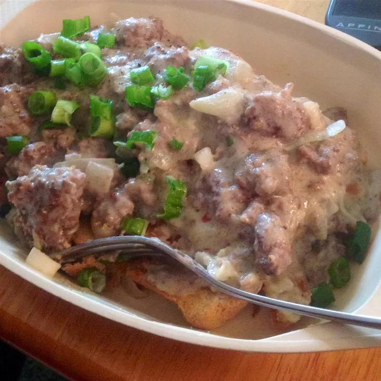

Dad's Hamburger Gravy

Description
This is one of my favorite 'cheap meal' recipes that I learned from my Southern cookin' Dad.
Creamy hamburger gravy with just the right blend of spices is perfect served over homemade biscuits,
mashed potatoes, rice, fried potatoes or just about anything!
Ingredients
- 2 pounds lean ground beef
- ½ onion, finely chopped
- 5 cups milk
- 2 tablespoons chicken bouillon granules
- 2 tablespoons butter or margarine
- 1 teaspoon ground sage
- salt and pepper to taste
- ½ cup all-purpose flour
Steps
-
Crumble the ground beef into a large deep skillet over medium-high heat.
Cook and stir until evenly browned. Drain most of the grease, leaving just enough to coat the pan.
Add the onions, and cook for a few more minutes.
-
Pour 4 cups of the milk into the pan,
and stir to scrape up any bits of food that could burn on the bottom of the pan.
Mix in the bouillon, butter, sage, salt and pepper.
Bring to a boil, and cook for 5 minutes, stirring frequently.
-
Mix the flour into the last cup of milk until smooth.
Slowly pour into the skillet, stirring constantly. Simmer for a few minutes to thicken.
If the gravy is too thick, thin with a little bit of milk. If it is too thin, simmer longer, or add more flour.
Taste and adjust seasonings before serving.